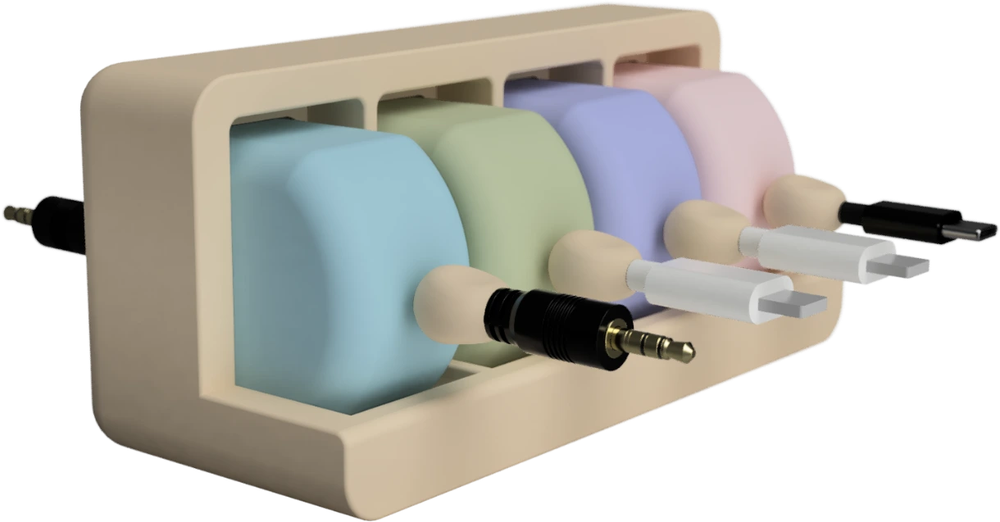
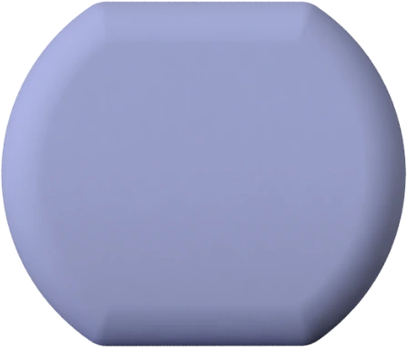
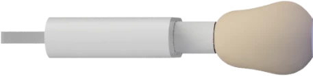
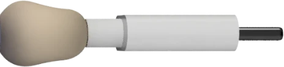

NYU Tandon senior project · Spring 2026
Cordify
A cable organizer I designed so each end could be adjusted independently.
The showcase prototype used two opposing retractable badge reels to demonstrate the independent movement. I still needed to get the same behavior working reliably with an actual cable.

01 / The problem
I wanted to adjust one end without moving the other.
I didn’t like having to bundle my cables back up after using them. The retractors I looked at either moved both ends together or kept one end at a fixed length. I wanted to use my own cables, leave one end plugged into my computer, and pull out only as much of the other end as I needed.
Interactive concept
Try the cable ends
Drag a connector to try the idea, or use the arrow keys or length buttons. You can also compare it with linked ends and a fixed computer end. Changing the layout resets both lengths.



Exposed cable length
Pull either end. The other end stays where it is.
This demo uses Fusion renders to show the intended movement. The 0–30 cm range is for illustration.
02 / Form and storage
A hub that keeps four organizers together
I wanted the organizers to fit together on a desk but also be easy to take out and carry.
One organizer, two cable ends
03 / Experiments
Getting the mechanism to grip the cable
I took apart existing retractors to understand their mechanisms, then tested pairs of spring-driven rollers to see whether they could grip and move a cable.
- Grip: The cable slipped between the printed rollers. I revised a TPU tire so it fit without tearing, but it still didn’t grip the cable well enough.
- Alignment: Adding a groove helped guide the cable, but I still needed a way to keep consistent pressure between the rollers.
- Reels: I also tried a layout that wound the cable onto reels. The two-reel arrangement needed more slack than I had left room for.
04 / Showcase
Showing the independent movement
At the showcase, I put a messy cable setup next to the hub and displayed earlier prototypes so visitors could see the changes. Inside the organizer, I mounted two retractable ID and key reels facing opposite directions. This let me pull and retract one side without moving the other. It showed the independent movement I wanted, although I still needed to make it work with a real cable.